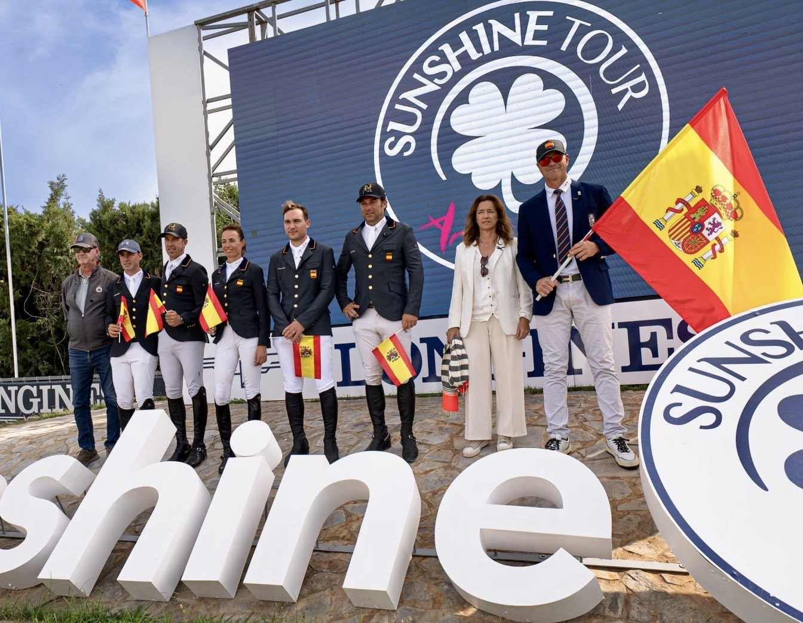

España remonta en la segunda manga, pero se queda sexta en Montenmedio
El equipo de François Mathy cerró con 16 puntos la Copa de Naciones del CSIO3* de Montenmedio, a un solo punto de Gran Bretaña, que fue quinta. Irlanda ganó con cuatro.

De 12 a 4. Esa fue la mejora de España entre la primera y la segunda manga de la Copa de Naciones KAR Sport Horses, disputada este viernes a 1,50 metros en la pista Don Antonio, dentro del VI Andalucía October Tour. No bastó para subir en la tabla: el equipo acabó sexto, con los mismos 16 puntos que Brasil, que quedó por detrás por el tiempo de su segunda vuelta.
El mejor resultado español fue el de Álvaro González de Zárate con «Casa Diva PS», que hicieron doble cero. Carlos Bosch Cebrián y «Jolie van der Berghoeve Kar» sumaron cuatro puntos en la primera manga y ninguno en la segunda. Pilar Cordón con «Pica Pica Z» pasó de 12 puntos, descartados, a cuatro. Bautista Rodríguez Debray con «Vivoulette HD» firmó ocho en cada vuelta, y su segundo resultado fue el que se descartó. Joel Vallés Rosell, con «Casaspezia Kar», fue jinete reserva. España compitió con cuatro yeguas.
Irlanda ganó con cuatro puntos. Tras cerrar la primera manga con esa cifra, hizo cero en sus tres resultados computables de la segunda. Compusieron el equipo, dirigido por Jessica Kürten, Francis Derwin con «Flexi K», Jessica Burke con «Billy Fern», Dermott Lennon con «Kinmar Right on Time» y Tom Wachman con «Do It Easy».
Estados Unidos fue segundo con ocho puntos e Italia tercera con diez. Suiza acabó cuarta con 13 y Gran Bretaña quinta con 14. Participaron catorce países y diez se clasificaron para la segunda manga. La prueba, puntuable para el ranking Longines, tuvo una dotación de 50.000 euros.
El equipo español compitió con un crespón negro en señal de duelo por las víctimas del accidente ferroviario. En Montenmedio las banderas ondearon a media asta y, tras el desfile de las naciones, se guardó un minuto de silencio.
Por Lucía Valdeolmos